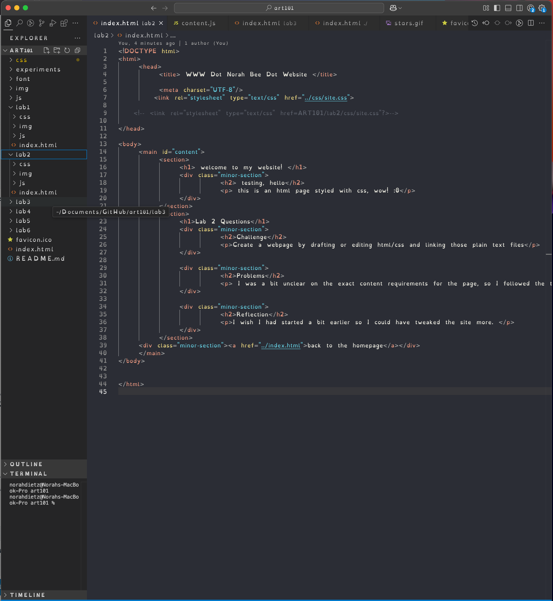
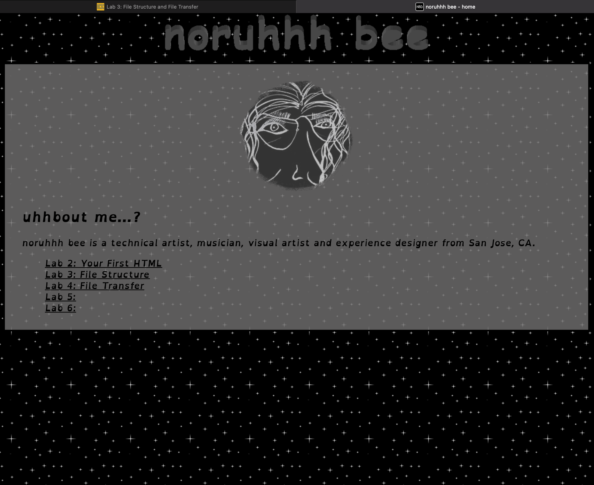

Lab 3 File Structures
Challenge
Build a filesystem according to the Lab instructions, and a homepage for linking those labs
problems
I got very side-tracked with fun CSS tweaks, which made this take longer. I also wasted some time trying to get the favicon to work.
results:
file system

homepage
